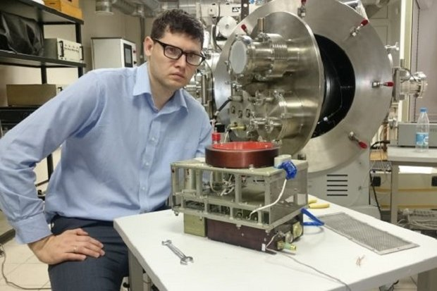
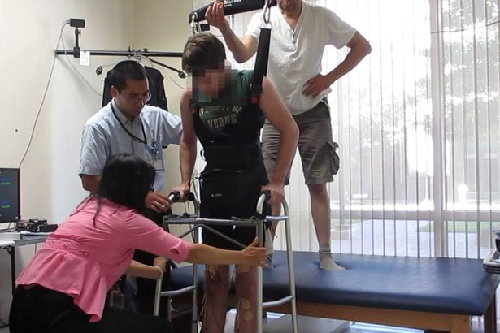
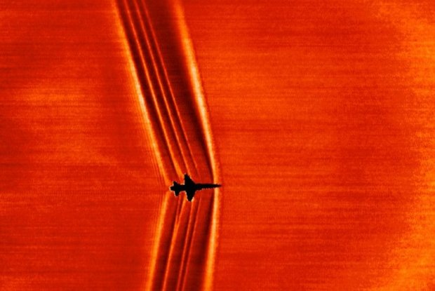

Российские ученые создали ионный двигатель для дальних космических перелетов

Сравнительно недавно об ионных двигателях можно было услышать лишь в произведениях фантастов, сегодня же это отработанная технология, которая применяется на практике.
Pebble Time Round - самые тонкие и легкие смарт-часы в мире

Компания Pebble следует мировому тренду, порадовав своих поклонников часами с круглым циферблатом — Time Round.
Важное достижение: ученые телепортировали фотон на расстояние в 100 км
Достижение группы ученых из Национального института стандартов и технологий (США) является важным для науки — им удалось телепортировать фотон на расстояние 100 км. Предыдущий рекорд составлял 25 км.
Медики научили ходить мужчину, который был парализован больше пяти лет

Американские ученые заново связали мозг и ноги у пациента, который не мог ходить на протяжении долгих лет. Научная работа об этом появилась в журнале Journal of NeuroEngineering and Rehabilitation, а краткий ее пересказ — на сайте Reuters.
Картинка дня: как выглядит сверхзвук на фоне солнца

Исследования аэродинамики никогда не выглядели так красиво. Новая вариация старой техники использовалась для визуализации сверхзвуковых ударных волн, пишет space.io9.com.